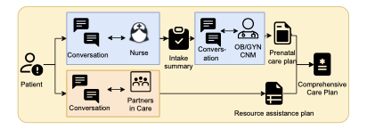
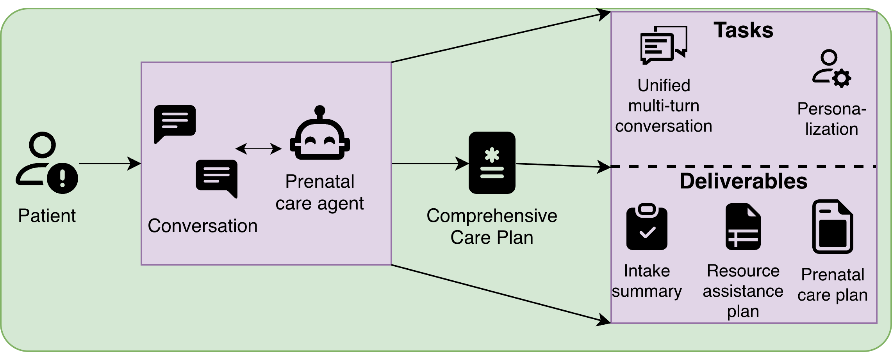
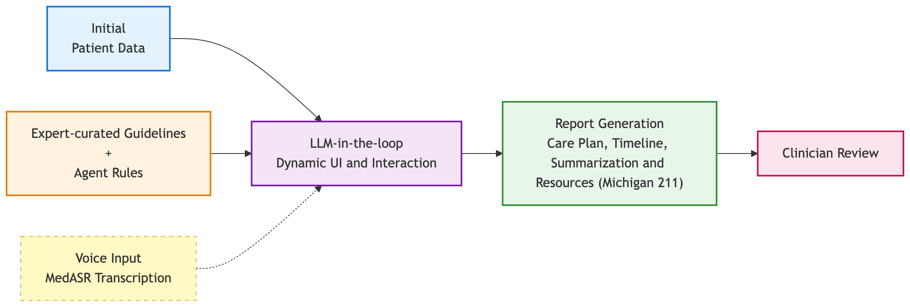
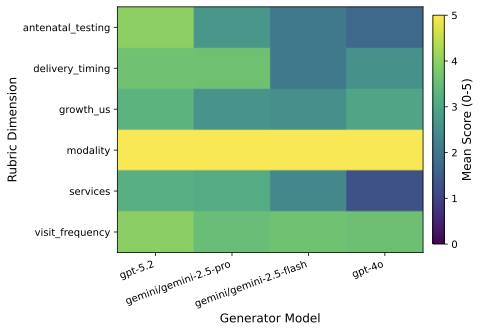

ACM Interactive Health 2026 · University of Michigan · REALIZE Lab
PATHFinder
Agents for Tailored Prenatal Care
An LLM-based agentic system that helps deliver prenatal care in a safe, scalable, and aligned manner — gathering each patient's medical and social context, mapping local resources, and individualizing visit cadence, all under clinician oversight.
Motivation
Prenatal care is care provided to birthing people — medical care, screening tests, answers to questions, and help finding social support and community resources during pregnancy.
"Prenatal care can improve the detection and management of chronic conditions and pregnancy complications, particularly for individuals with an increased risk of adverse outcomes." — ACOG
About 4 million pregnant people access prenatal care each year in the United States. At this scale, fixed, one-size-fits-all workflows can miss practical barriers and increase the risk of delayed follow-up. The core problem is aligning medically important milestones with real-life access constraints so that patients can consistently complete recommended care.

The PATHFinder Approach
In collaboration with expert clinicians, we present PATHFinder, an agentic system that provides conversational care to patients while keeping clinicians in the loop — enabling tailored prenatal care planning that all stakeholders can trust, and redirecting clinician effort toward improving care.

How It Works
PATHFinder follows a four-stage workflow — the same flow you can step through in the interactive demo: intake, follow-up dialogue, a draft plan & report, and clinician review.

Evaluation
We evaluate PATHFinder against a clinician-informed rubric spanning multiple dimensions of plan quality, safety, and alignment.

Citation
@inproceedings{balloli2026pathfinder,
title={PATHFinder Agents for Tailored Prenatal Care},
author={Balloli, Vaibhav and Samuel, Carissa and Abdelnabi, Samia and Peahl, Alex and Bondi-Kelly, Elizabeth},
booktitle={ACM Interactive Health},
year={2026}
}
Team


Authors: Vaibhav Balloli, Carissa Samuel, Samia Abdelnabi, Alex Peahl, and Elizabeth Bondi-Kelly · University of Michigan, REALIZE Lab.